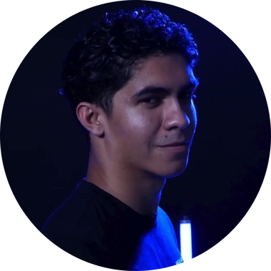
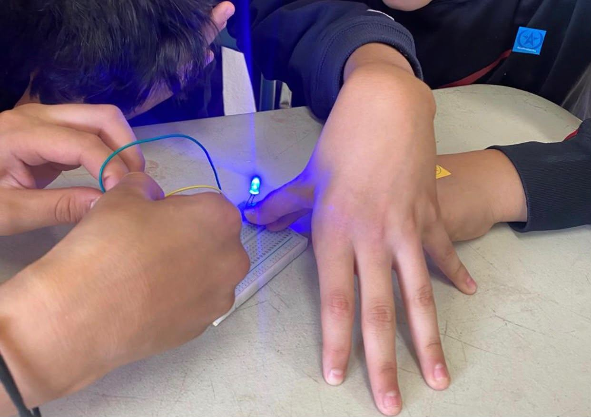
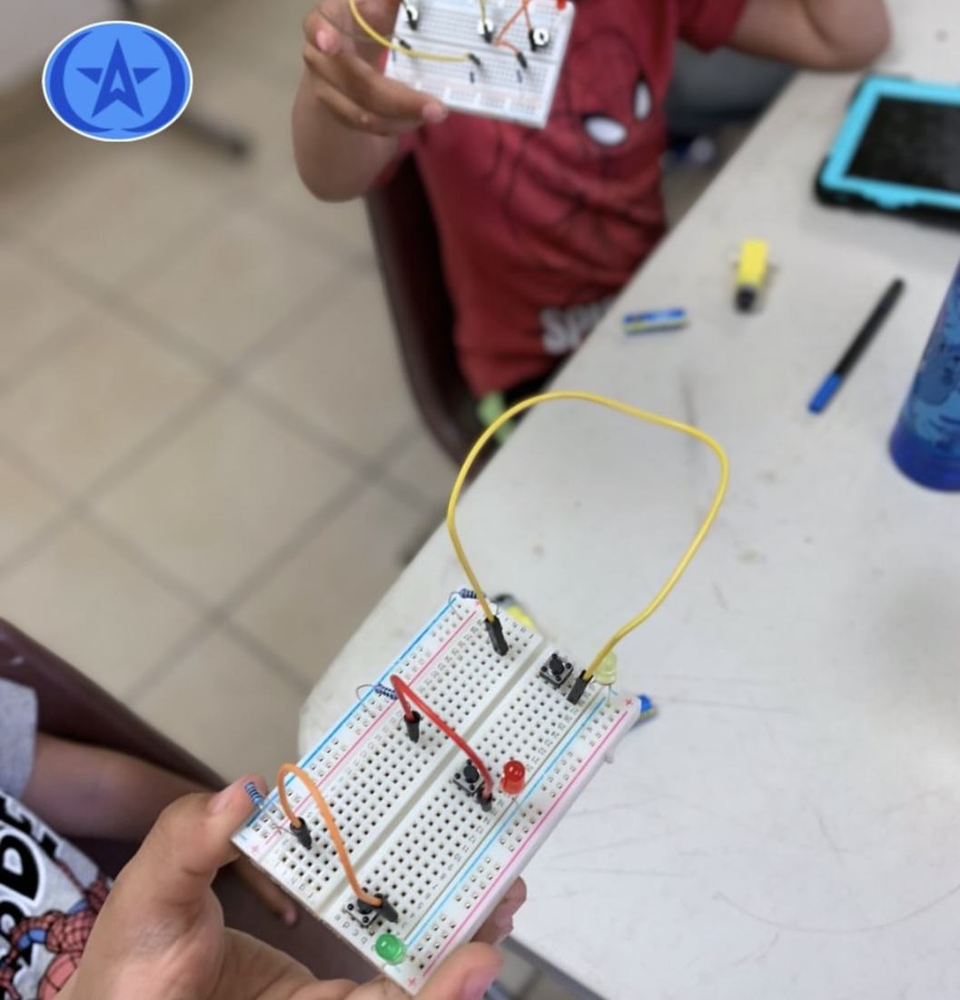
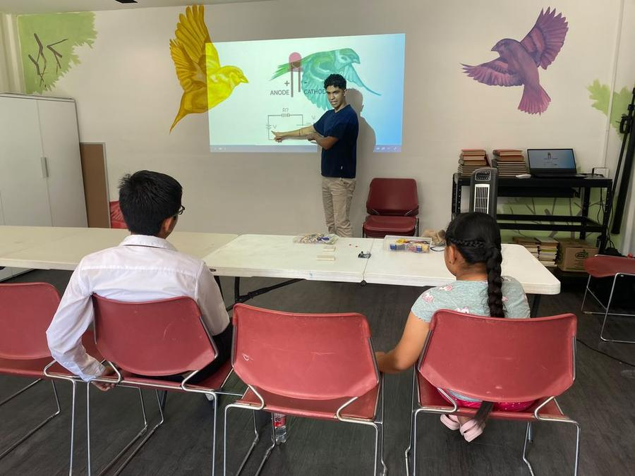
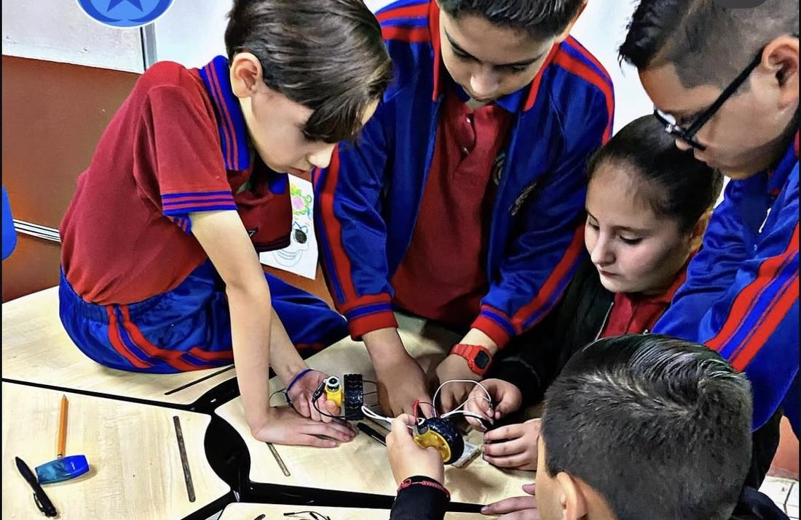
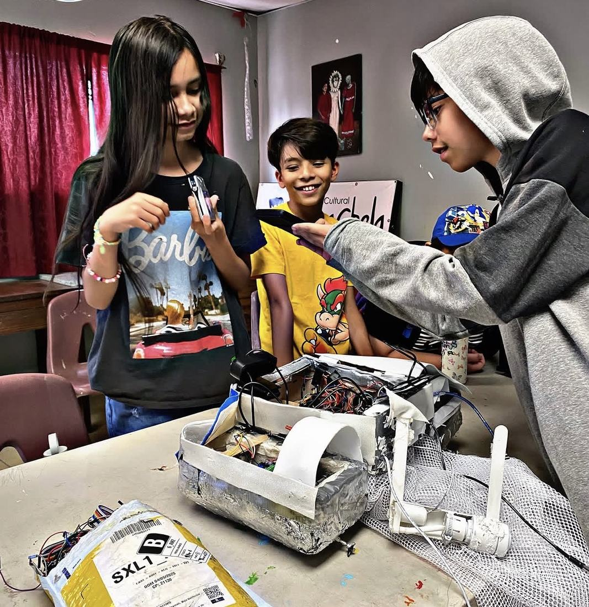
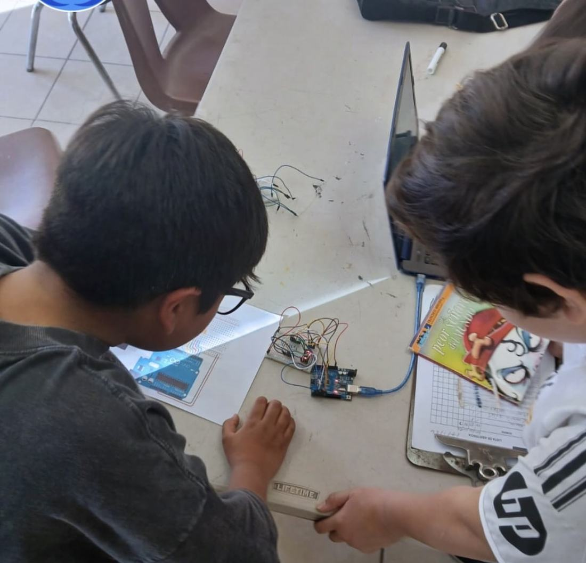
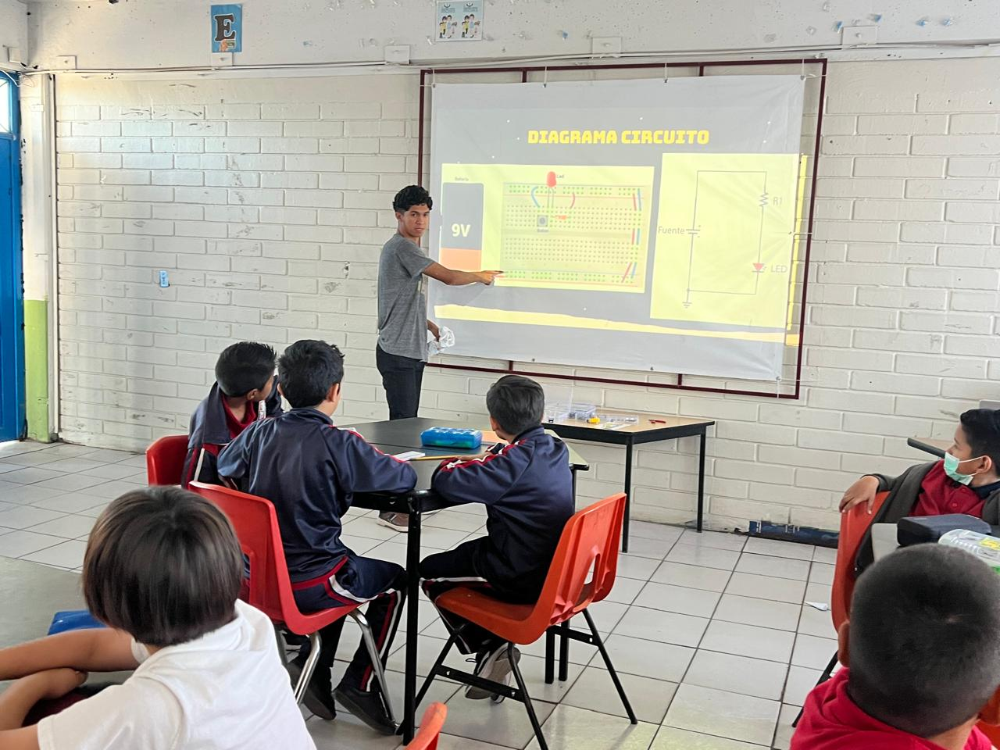

0
Alumnos formados
Cultivatec no nació como empresa de software. Nació como un grupo de personas dando clases gratuitas de robótica en comunidades de Mexicali que nunca habían tenido acceso a ellas.
Hay niños que crecen rodeados de violencia, escasez y silencio. No porque les falte talento — les falta un espacio. Cultivatec existe para ser ese espacio: uno creativo, seguro y libre, donde un niño puede equivocarse, intentarlo de nuevo, y descubrir que puede construir algo con sus propias manos. Eso, a veces, es lo único que se necesita para cambiar el resto de una vida.
Darle a cada niño, sin importar el barrio donde nació o la escuela a la que puede pagar, un espacio para crear tecnología con sus propias manos — y con eso, la certeza de que puede construir un futuro distinto al que le tocó.
Ser la plataforma de educación STEM más grande de Latinoamérica: presente en cada país, cada colonia y cada escuela donde un niño necesite un camino distinto al que le rodea. Empezamos en un salón prestado en Mexicali. No vamos a parar ahí.
Un niño que arma su primer circuito no solo aprende electrónica: aprende que sus ideas importan, que sus manos pueden crear en vez de solo sobrevivir, y que hay adultos que creen en él. Eso no se les puede quitar después.
Todo comienza con un LED.
El proyecto más pequeño puede encender algo mucho más grande. No subestimamos el primer paso — lo celebramos.
Un circuito quemado o un código que no corre no es un fracaso — es un dato. Aquí se premia intentarlo, no acertar a la primera.
Hemos visto el mismo talento en un salón prestado que en la mejor escuela privada. La única diferencia era la oportunidad.
Antes de enseñar robótica, cuidamos que cada niño se sienta seguro, escuchado y libre de intentarlo sin miedo a ser juzgado.
No creemos que la buena educación tecnológica deba ser solo para quien la puede pagar. Por eso existe nuestro modelo de subsidio cruzado.
Nuestra metodología es distinta a la tradicional: el niño aprende con proyectos y retos, no solo memorizando.

"La educación es para todos"

Abraham Doñate empezó Cultivatec con una visión muy simple y muy clara: darle a niños rodeados de violencia un espacio creativo, seguro y libre — y mostrarles un camino que pudiera cambiarles la vida. Sin laboratorio, sin presupuesto, con material comprado de su bolsillo y niños que jamás habían tocado un microcontrolador.
Un LED quemado era un LED menos para el siguiente grupo. Con 30 niños y un solo kit, la mayoría miraba en lugar de construir. Necesitábamos que cada alumno pudiera equivocarse todas las veces necesarias sin que eso costara dinero.
Si el material físico era el cuello de botella, la solución era darle a cada niño un laboratorio infinito en el navegador. Así nacieron la Mesa de Circuitos, el editor de bloques y el Mini-CAD: herramientas hechas desde el aula, no desde una oficina.
Creamos el copiloto de planeación, porque los docentes nos pedían ayuda con el papeleo, no con la clase.
Desde ese salón prestado en enero de 2023, más de 1,500 niñas y niños han recibido robótica con nosotros, en decenas de escuelas e instituciones de todo México, con impacto internacional. Vendemos software, kits y cursos a colegios que pueden pagarlos, y con eso sostenemos las clases gratuitas que seguimos dando. No dejamos el origen atrás: lo convertimos en el motor.
La metodología Cultivatec es distinta a la tradicional: el niño aprende resolviendo proyectos y retos reales, no copiando de un pizarrón. Se equivoca, ajusta, y lo intenta de nuevo — así es como se aprende de verdad.
Cada licencia, kit y curso que vendemos paga material, traslado e instructores para estas sesiones.






No pedimos donativos para operar. Cada producto que vendemos lleva dentro el costo de las clases que damos gratis.
A colegios privados, academias e instituciones con presupuesto.
En comunidades y escuelas sin recursos para un programa STEM.
Las clases en comunidades vulnerables y el acceso de esos alumnos a la plataforma siempre serán gratuitos. El modelo de negocio existe para financiar la misión, nunca para limitarla.
Seguimos dando talleres gratuitos de robótica. Si conoces una escuela, casa de cultura, albergue o colonia donde los niños no tienen acceso a esto, escríbenos y vemos cómo llegar.
Escribe a contacto@cultivatec.com.mx
Un taller típico dura entre 4 y 8 sesiones.

Alumnos formados
Escuelas aliadas
Proyectos construidos
Ahorradas al docente por semana
Si tu colegio contrata con nosotros, parte de ese presupuesto se convierte en clases gratuitas para otros niños.